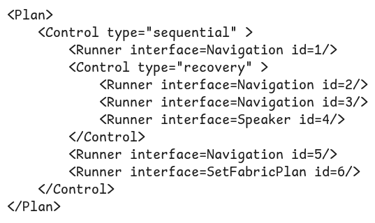
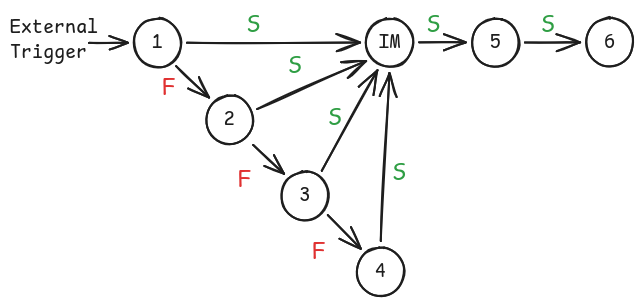
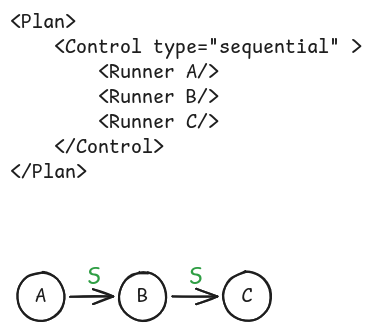
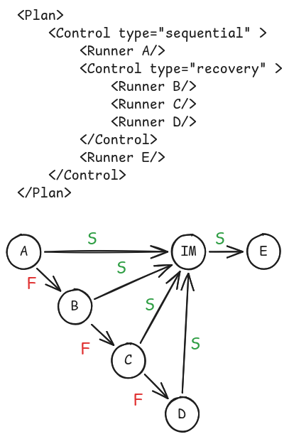
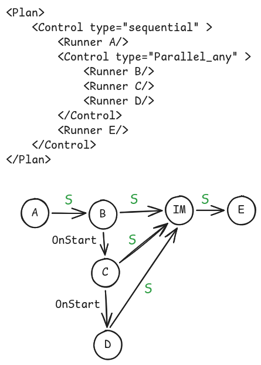
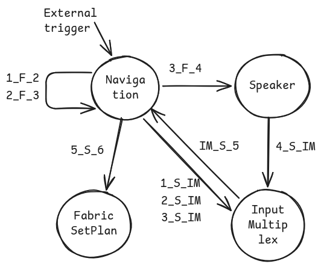

A Generative Partially Specified Finite State Machine Approach to Complex Behaviour Planning
Abstract
Autonomous robots operating in dynamic environments require behaviour planning systems that combine reactivity, interpretability, and adaptability. While Large Language Models have been successfully integrated with Behaviour Trees for dynamic replanning, Finite State Machines remain largely unexplored for generative approaches. We propose a Generative Partially Specified Finite State Machine neurosymbolic architecture that utilises the symbolic and semantic structure of FSMs, including states and event-triggered transitions, to implement behaviour planning. The paper introduces Fabric, an FSM engine that parses, validates, and executes behaviour plans with Sequential, Recovery, Parallel-Any, and Parallel-All control structures; extends Capabilities2 with an asynchronous event system and runtime parameter injection; and presents PromptTools as a unified ROS 2 interface to local and cloud LLMs. Experiments on navigation tasks show consistently higher plan-generation success rates than BTGenBot, especially in zero-shot settings, while maintaining competitive planning latency.
.png)
System architecture linking Fabric, Capabilities2, PromptTools, and external LLM services.
.png)
Fabric generation pipeline from parsing and validation to execution and online plan replacement.

A simplified XML execution plan used as the textual representation for GPSFSM generation.

Graph-level interpretation of the generated plan with explicit success and failure transitions.
Experimental Overview
.png)
Example generated execution plan for a navigation task showing how PromptTools and Fabric cooperate to assemble runnable behaviours.
Behaviour Control Patterns

Sequential control for ordered execution.

Recovery control for fallback behaviour after failure.

Parallel-any and parallel-all coordination through internal runners.
Generated Plan Views

Example plan views showing the mapping from generated XML to runner-level execution structure.
BibTeX
@inproceedings{ratnayake2026gpsfsm,
title={A Generative Partially Specified Finite State Machine Approach to Complex Behaviour Planning},
author={Ratnayake, Kalana and Pritchard, Michael and Hinwood, David and Jayasuriya, Maleen and Herath, Damith},
booktitle={IEEE/RSJ International Conference on Intelligent Robots and Systems (IROS)},
year={2026},
url={https://github.com/CollaborativeRoboticsLab/gpsfsm-2026}
}